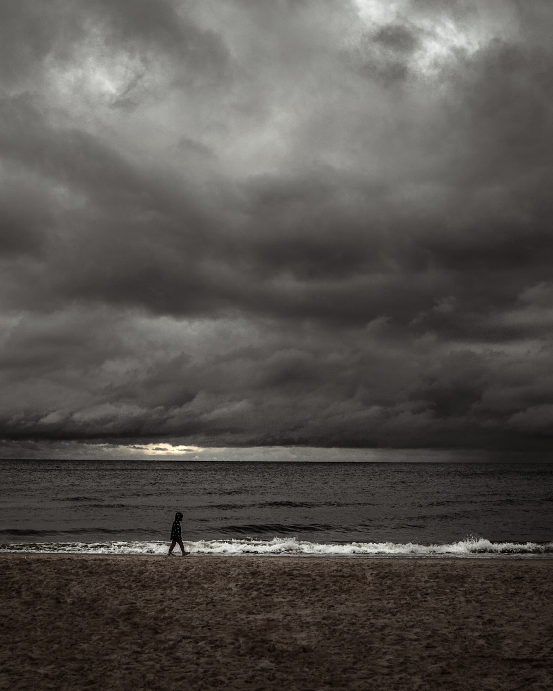

Music is probably what I would call my favorite form of Art. Although I've been drawing longer than I've been composing, the skills of creating beautiful sounds from practically nothing has pulled at my heart far stronger than other other hobby I've ever had.
Seaman's Dream

A piece I wrote on behalf of someone I know who loves to sail, though I can't fathom why. A piece that begins adventerous, and ends in desire and hope.
Echo's Theme
A Main theme I wrote for a video in a colloge course